15 fresh directions.
Different structures, typography and colour. The same load → develop → select workflow, using clearly labelled illustrative data.
Open a design to try squad navigation, progression periods, player search and retired-player filtering.
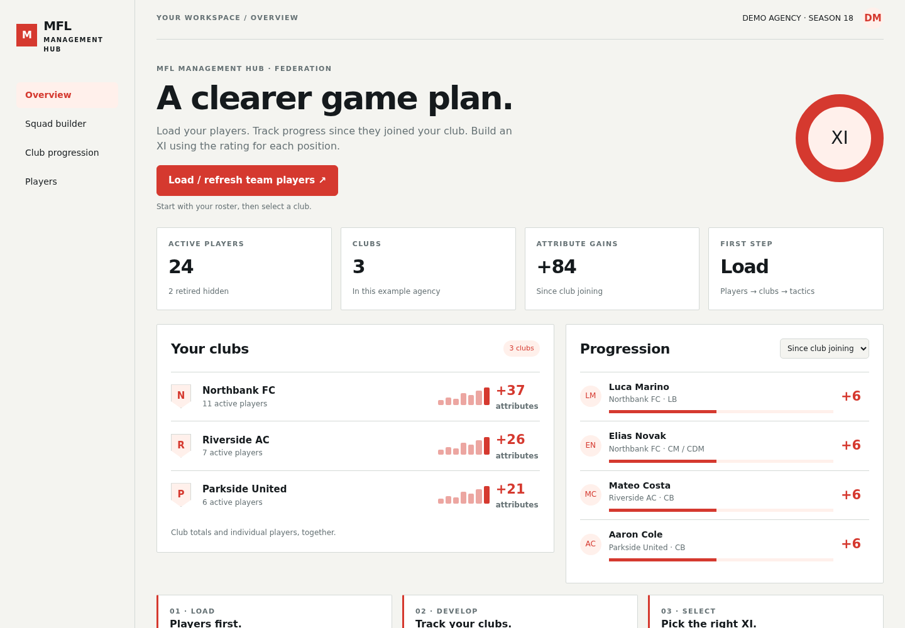
Federation
White, vermilion and precise typography. A slim left navigation and a disciplined operations grid.
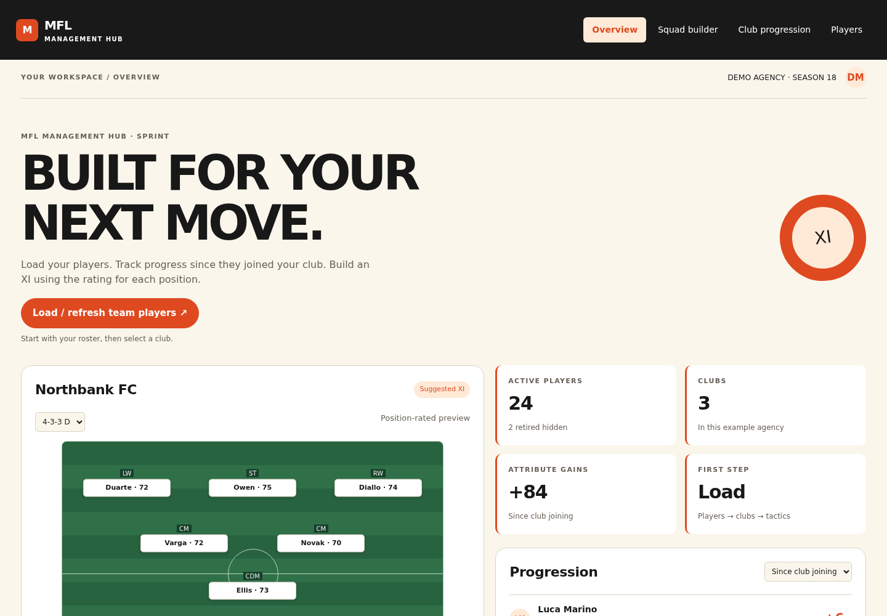
Sprint
Oversized athletic headlines, tangerine panels and a horizontal race-strip navigation.
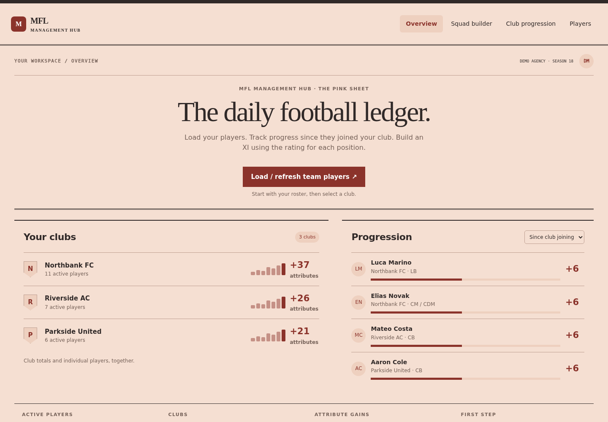
The Pink Sheet
Salmon paper, ink rules and editorial columns. Football progression presented as a daily briefing.
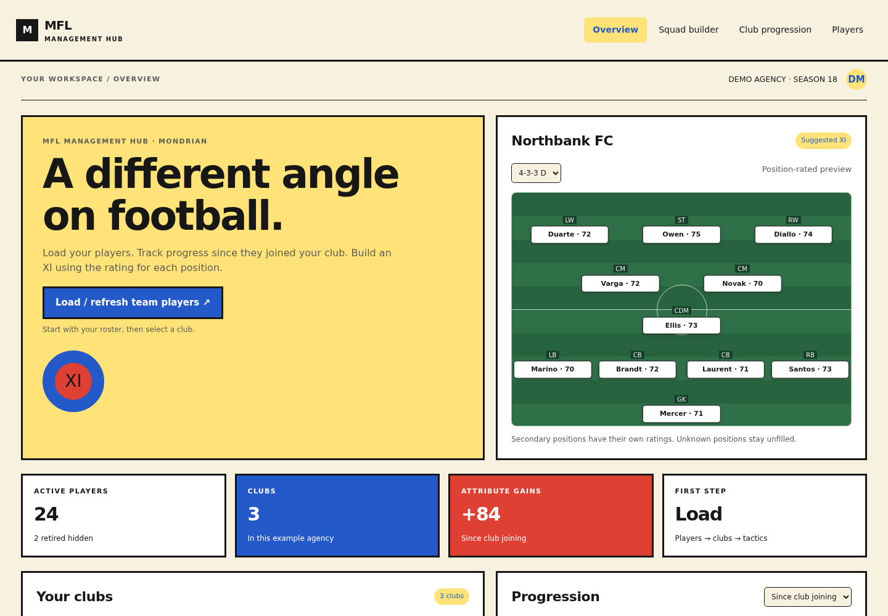
Mondrian
Primary-colour rectangles, thick ink borders and a modular federation-style control surface.
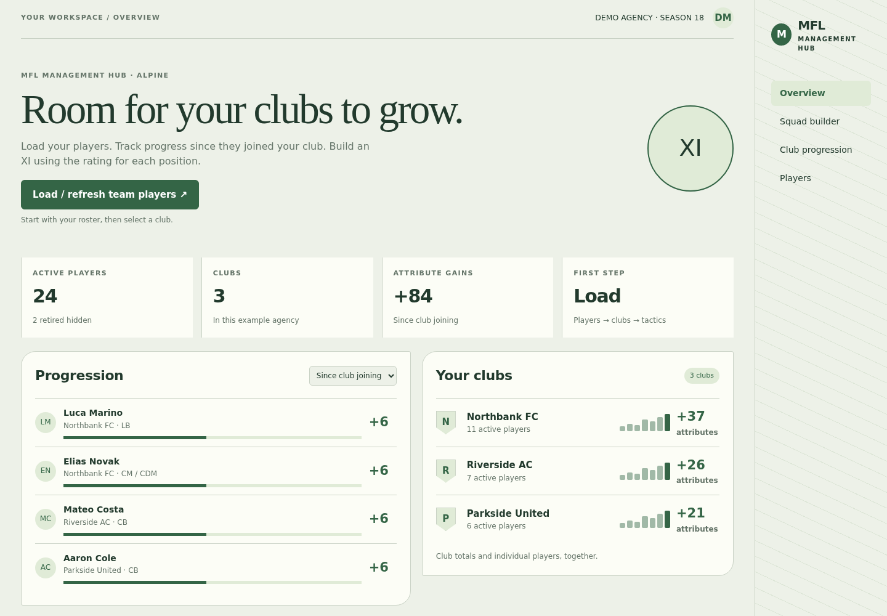
Alpine
Sage and pine, generous type and a terrain-inspired side panel. Club progress becomes an expedition log.
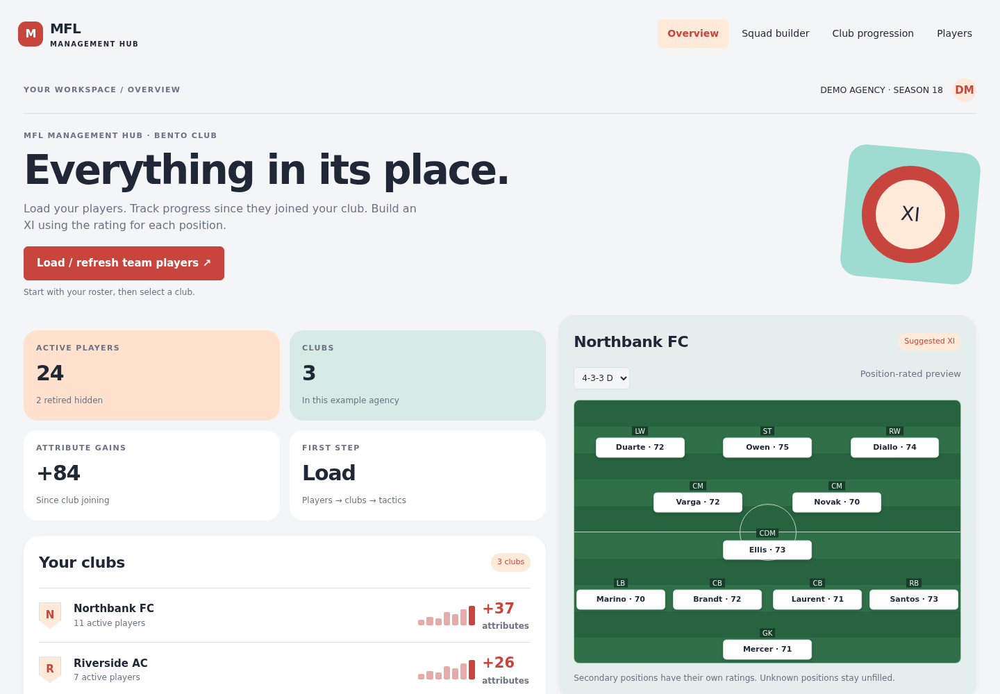
Bento Club
Bright white, coral and aqua. A wide card canvas, small status chips and a different-sized tile for each job.
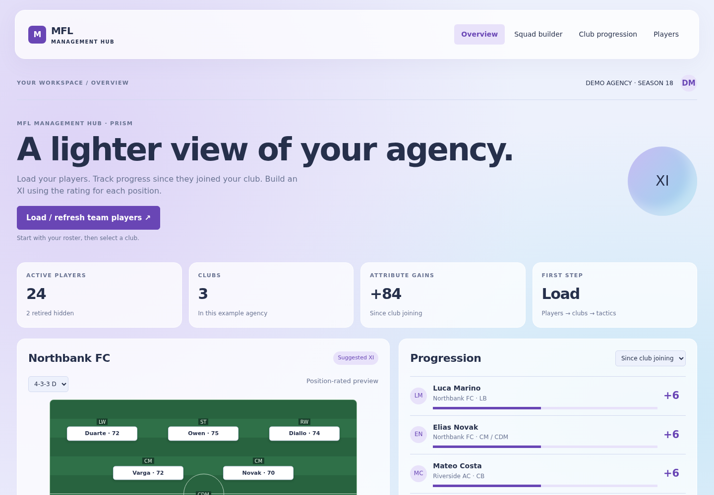
Prism
A pale lilac and ice-blue mesh, translucent panels and a floating command dock. Light rather than luminous black.
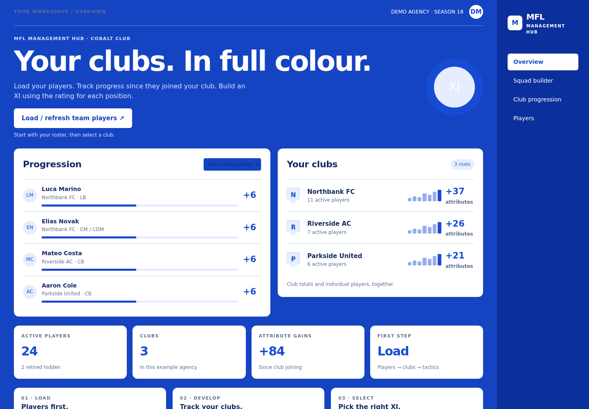
Cobalt Club
An immersive blue canvas, high-contrast white panels and a compact right-hand utility rail.
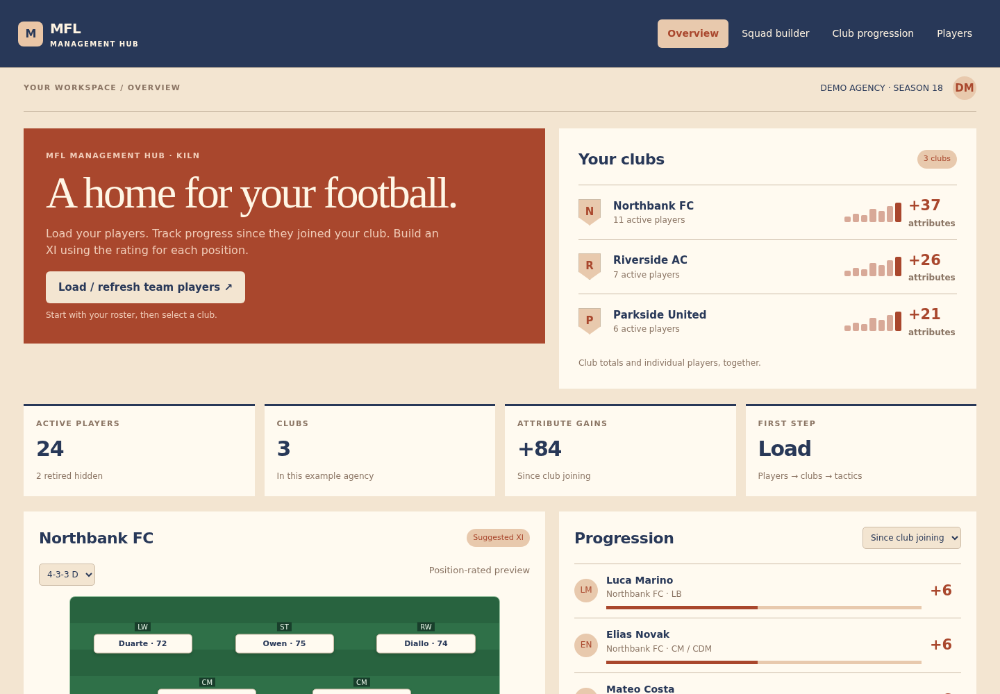
Kiln
Terracotta, chalk and deep blue. A horizontal architectural composition with generous square sections.
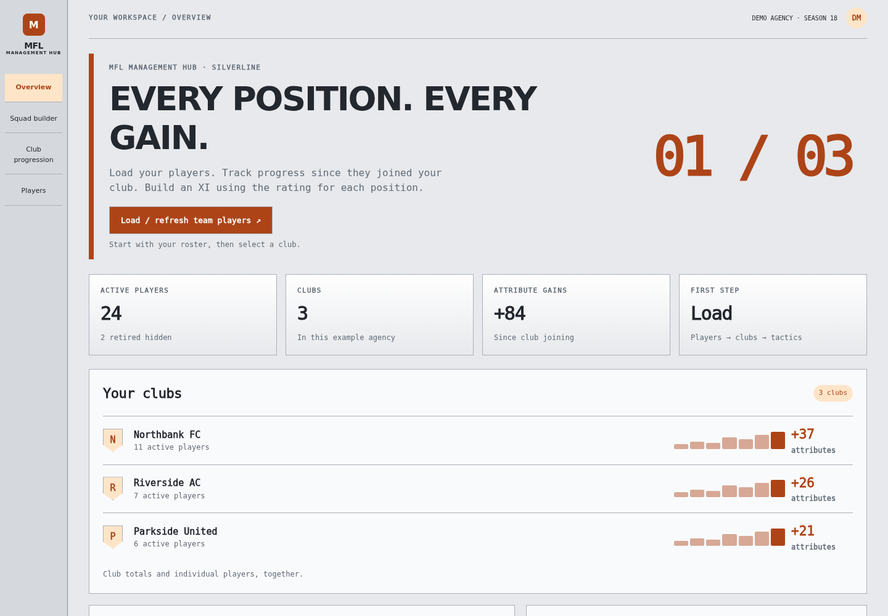
Silverline
Cool aluminium, graphite and orange. A numbered navigation rail and a horizontal performance ledger.
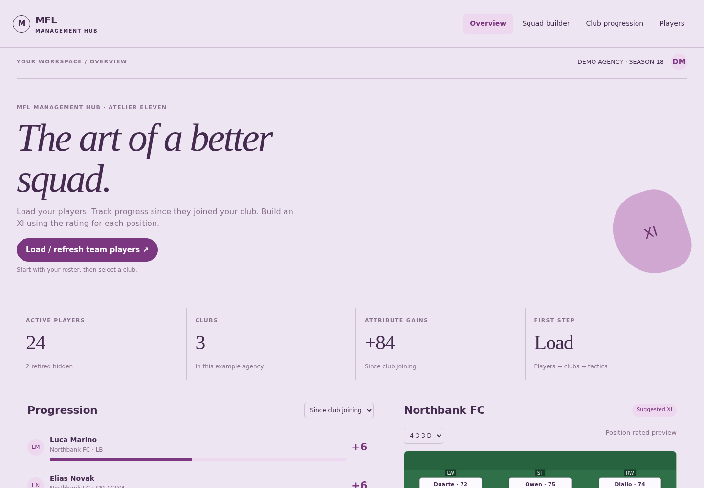
Atelier Eleven
Lavender, plum and sculptural serif type. A large typographic masthead with a calm gallery grid.
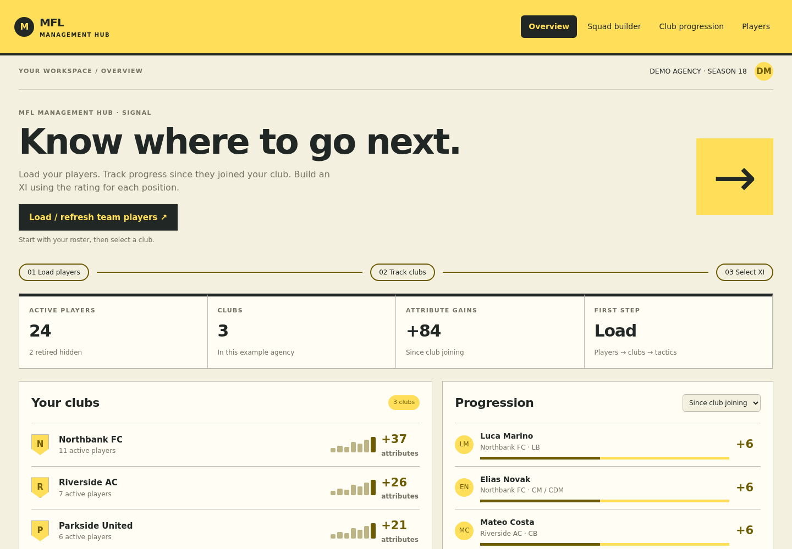
Signal
Warm yellow and charcoal with route-like navigation. Big labels, compact boards and exceptionally clear wayfinding.
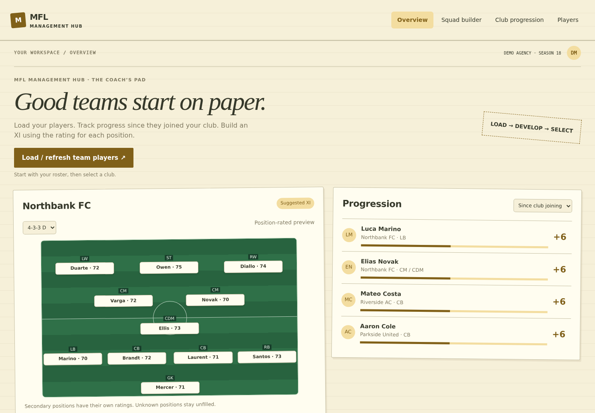
The Coach’s Pad
Warm ivory, hand-drawn field marks and ochre tabs. A useful notebook rather than a software dashboard.
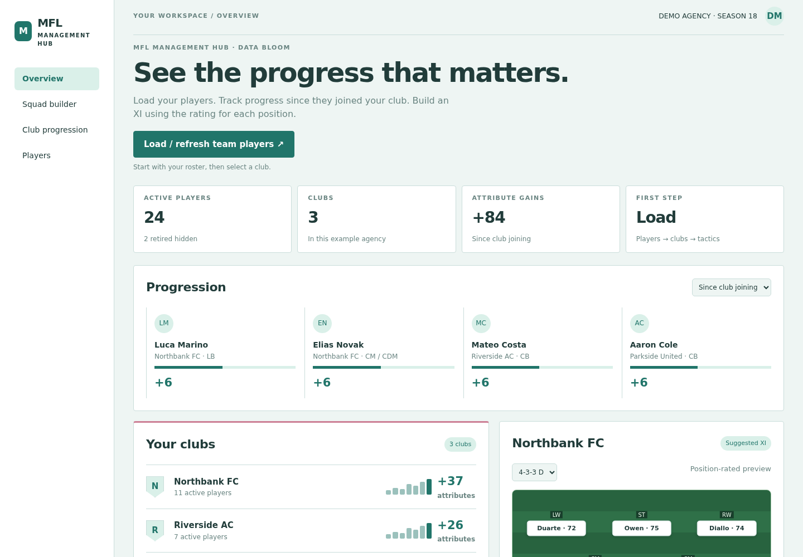
Data Bloom
White and teal with rose heatmap cells. Progression tables lead the page and compact charts carry the story.
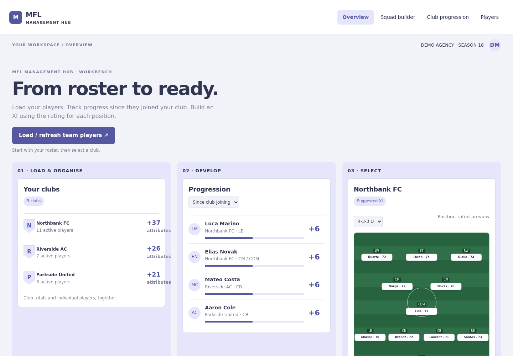
Workbench
A bright indigo-and-white canvas with three working lanes: load, develop and select. Tasks lead, analytics follow.